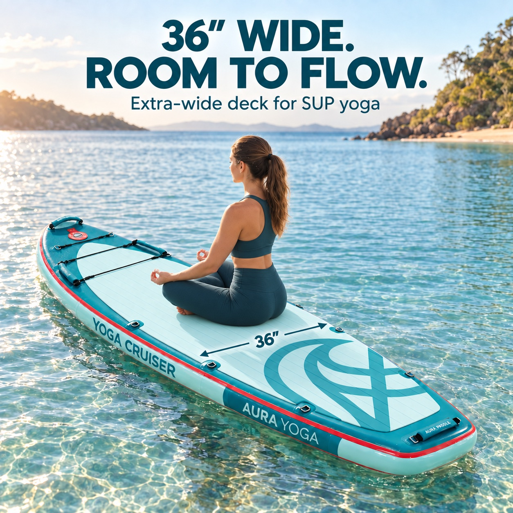

Wide inflatable paddle boards
Choose usable width, not width alone.
Yoga Cruiser is 36 inches wide — 91.44 cm, or about 91 cm — with an 11-foot outline and a broad deck intended for yoga, gentle movement and relaxed cruising. CoastGo is 33 inches wide and 10'6" long, giving it a more compact all-round format.
Yoga Cruiser11'0" × 36" × 6" · 180 kg maximum
CoastGo10'6" × 33" × 6" · 120 kg maximum
The extra three inches of published width gives Yoga Cruiser more room to change stance or use the deck for yoga. CoastGo is the simpler choice when an everyday all-round shape and hand-pump setup matter more than maximum deck width.